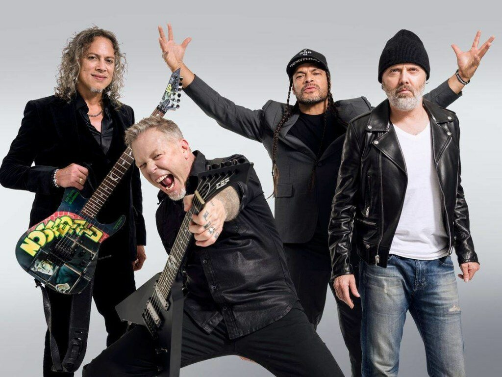
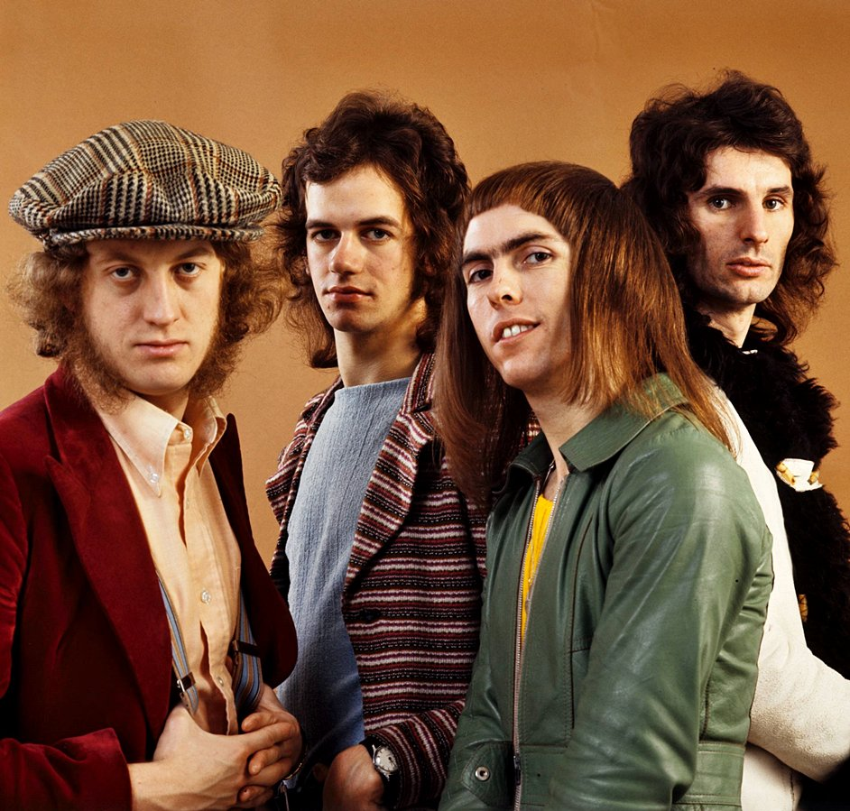
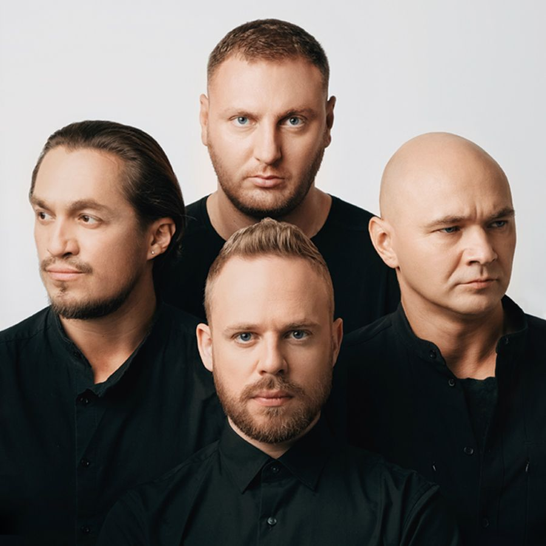

1. Sabaton

Sabaton собрались в 1999-м, а в середине
2000-х выпустили свой дебютный альбом «Primo Victoria», полный воодушевляющих хеви-металлических гимнов с милитаристской тематикой
и боевым настроем. В том же духе были выдержаны следующие релизы, воссоздавшие лучшие традиции жанра. Популярность группы вышла
на новый уровень в 2010-х, когда команда присоединилась к лейблу Nuclear Blast и выпустила бестселлер «Carolus Rex», возглавивший
европейские метал-чарты. В этом плейлисте собраны мощнейшие записи шведского коллектива, включая треки с концептуального релиза
«The Last Stand», который стал возвращением к бескомпромиссному звучанию ранних работ.
Посетить оффициальный сайт группы Sabaton
2. Metallica

Дебютный лонгплей калифорнийцев Metallica «Kill ‘Em All», на котором те с панковской агрессией рубили скоростные риффы в духе
новой волны британского хеви, в 1983 году стал одним из важнейших кирпичиков в фундаменте нового жанра треш.
Дальше были заигрывания с прогрессивным звучанием, подарившие еще три безупречных альбома 1984–1988 годов, а потом —
коммерческий триумф 90-х, непрерывная ротация на MTV, радикальные стилистические эксперименты и возвращение к корням.
Группа Metallica славится великолепным умением соединять в своей музыке скорость и мощь, чувственность и зашкаливающее эмоциональное
напряжение. Всякий, кто хоть однажды попал в гипнотический плен неотразимой музыки легендарной четверки, неизменно жаждет услышать продолжение.
Посетить оффициальный сайт группы Metallica
3. Noize MC
Выросший в 90-е на Nirvana и Prodigy, Noize MC совмещает в своих треках рок и рэп, ясно выразив отношение к шоу-бизнесу в «Песне для радио».
Победы в престижных баттлах и контракты с ведущими лейблами превратили уличного музыканта в звезду, однако не изменили главного:
даже на вершине успеха Noize MC остался человеком андеграунда, занимающим активную гражданскую позицию, готовым встать на защиту справедливости
и протестовать против произвола власти.
Посетить официальный сайт исполнителя Noize MC
4. Slade

В золотой период 70-х Slade выпустили один за другим целый ряд хит-синглов, покоривших чарты в их родной Великобритании. Но их неотразимый
глэм-рок c необыкновенным, хрипловато-высоким вокалом, гениально простыми риффами, цепкими припевами и захватывающими мелодиями пробил даже «железный занавес»
— его слушали и в СССР тоже. В 80-е команда утяжелила свое звучание и с успехом влились в новую волну молодого британского хеви-метала. Все важнейшие треки
легендарной группы, с годами не растерявшей запала, вы найдете в этом плейлисте.
Посетить официальный сайт группы Slade
5. Каста

Влади, Хамиль, Шым, Змей и Баста (выступавший с группой в 1997 году) — имена, золотыми буквами вписанные в историю русского рэпа. В середине 90-х «Каста» стремительно
сокрушили лидерские позиции хип-хоп-группировки Bad Balance. В 1999 году парни из Ростова-на-Дону выпустили свой первый альбом «Трехмерные рифмы» и завоевали
Гран-при фестиваля Rap Music'99. В 2002 году рэперы отправились в турне по России, Украине и Прибалтике. А альбом «Что нам делать в Греции?» окончательно закрепил
за «Кастой» звание одной из главных групп российской рэп-сцены.
Посетить официальный сайт группы Каста